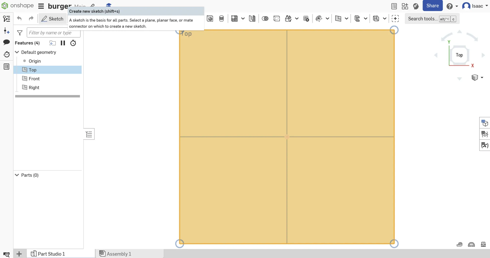
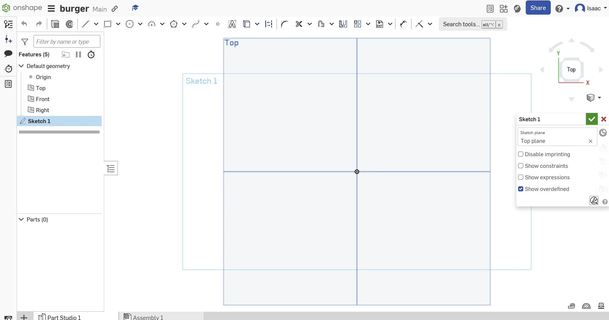
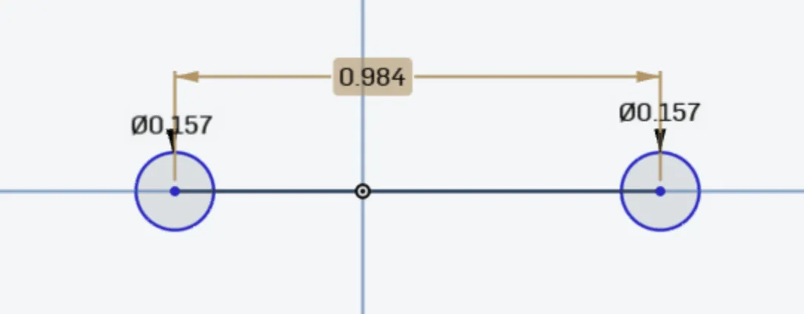
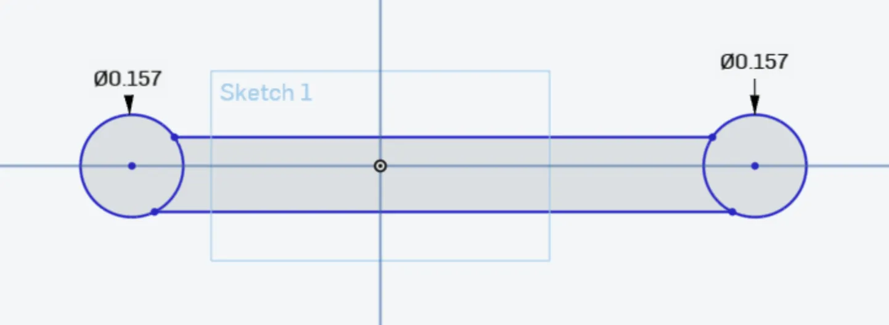

OnShape Guide
This guide should walk you through [blah blah]. Before you start, make sure you've set up Hackatime for OnShape!
1) Create a new document
Open Onshape and log in to your account. Click on the "Create" button in the top-left corner and select "Document". Name your document whatever you want.
2) Set up the project
In your new project, select the Top Plane in the workspace. Click on the "Sketch" tool to start a new sketch. A window will pop up, move it out of the way so you can work (you will press the check at the top of the window when you are done). Orient the view to look directly at the Top Plane using the View Cube.


3) Creating the hooks
Draw two circles, each 4.5mm in diameter (use the dimension tool which looks like a arrow between 2 lines to set exact diameters), spaced 25mm apart center-to-center. You can ensure they are spaced the right distance by creating a line between them (make sure it is touching the sides of both of them) and then using the dimension tool to set the line to 25mm. after doing this, you may delete the line. Draw a rectangle connecting the two circles to form the base of your hook. Use the dimension tool on the rectangle and set the thickness to 3mm or more (depending on what you want it to hold).


4) Extruding the base
Exit the sketch by clicking the "Finish Sketch" button in the window that popped up earlier. Use the "Extrude" tool to give the base thickness. Extrude it to 5mm using the tool that looks like a gray square in front of a white one.
5) Designing the hook arm
Create a new sketch on the front face of the base you just created (change to the front face using the square in the top right corner). Draw a curved/angled line representing the hook arm extending downward from the base using the tool that looks like a bendy line (the spline tool). Use the Offset tool (looks like a tilted heart) to create a profile for the hook arm (around 3mm wide). Use the line tool to create a line connecting the two bendy lines you should now have (make sure to create lines connecting both ends, even the ends that are touching the object you made earlier). Click the finish sketch button.
6) Extrude the hook arm
Use the Extrude tool to give the hook arm thickness. Extrude it to 10mm to create a sturdy hook.
7) Add the pegboard clips
Go back to the base sketch, Draw small extensions that act as clips to fit securely into the Skådis holes. These clips should be slightly smaller than 4.5mm to ensure a snug fit. You should extrude these clips by 5mm outward from the back of the base.
8) Fillet edges
Use the Fillet tool to round the edges of the hook and the clips. This makes it look better and makes it more flexible.
Thank you for following the guide, and happy hacking!